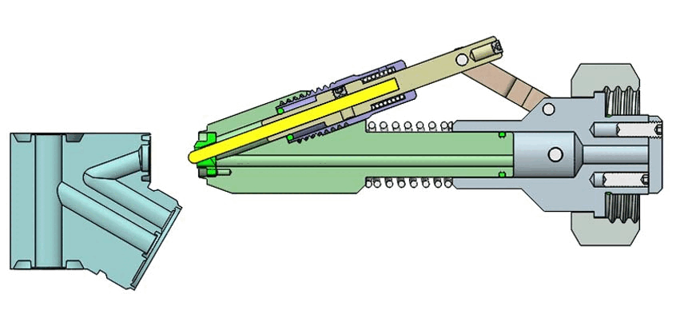
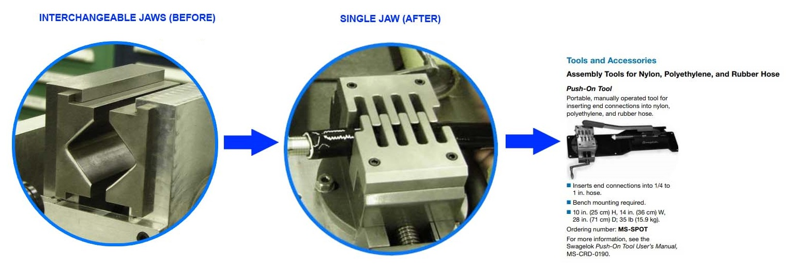

|
12. Inventions:
12.1. Self-Retracting Electrode Plunger for Electropolishing Stainless Steel: This invention was a 20 degree self-retracting electrode plunger that automated the setup of electropolishing fixtures. The benefit was that manually fixturing 20 degree ports was tedious. This tool saved hours of setup time per day.  12.2. Hose Insertion High-Grip Interlocking Crimping Chuck: This invention was a single set of interlocking jaws that improved grip and concentricity of hose insertion. The benefit was that the prior design required users to interchange a set of jaws depending on the size of the hose they were inserting. The design was incorporated into the mainstream product of a $2b company catalog and was considered for a patent.  |